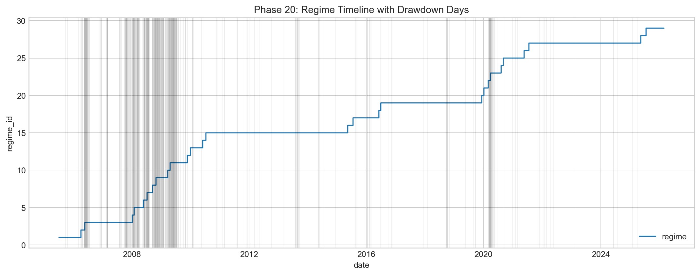
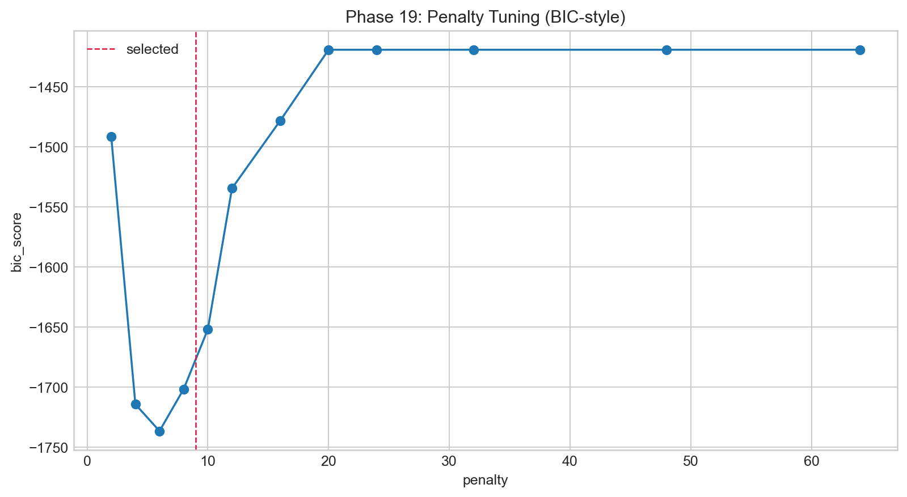

Regimes and Structural Validation
Entry: this is where I stop treating time as homogeneous and explicitly segment state behavior.
I detect regimes from factor-space composite signal using penalty scans and BIC-guided selection. I care less about one “perfect count” and more about whether segmentation is persistent, interpretable, and consistent with shifts in volatility and dispersion summaries.
What I saw in regime outputs
In broader legacy-style runs I get higher segment counts (around low-30s). In strict runs the segmentation compresses (single-digit segments). I don’t see this as contradiction. I see it as sensitivity to data strictness and objective constraints, which is expected in long-horizon nonstationary systems.








Structural validation after segmentation
I then test whether regimes correspond to meaningful shifts in market-vol and dispersion statistics. They do. The regime-conditioned plots show clear differences in mean volatility and drawdown burden. That is my key validation criterion, not just having a pretty timeline with colored bands.


Split robustness snapshot
I use split-level checks to avoid one-regime overfit narratives. Across split diagnostics, PC1 stays stable while effective K can vary. That pattern supports the same hierarchy I keep seeing: stable systemic core, less stable secondary geometry.


Shared reference
Dictionary: same terminology map used in every page.